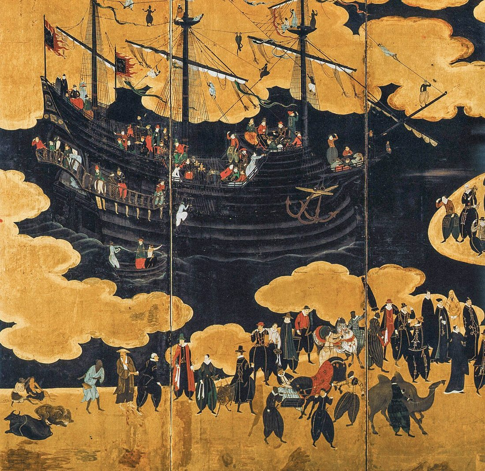
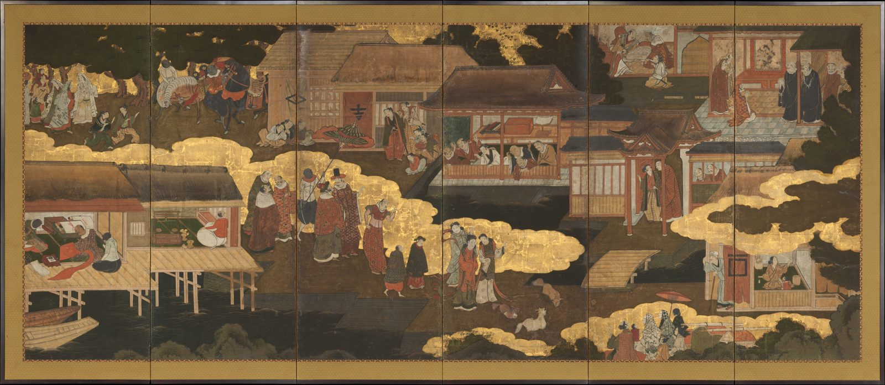
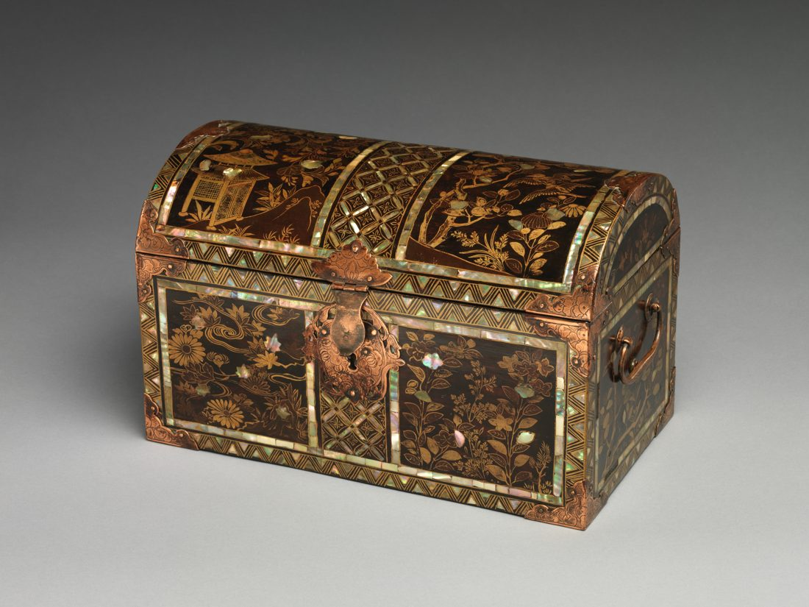
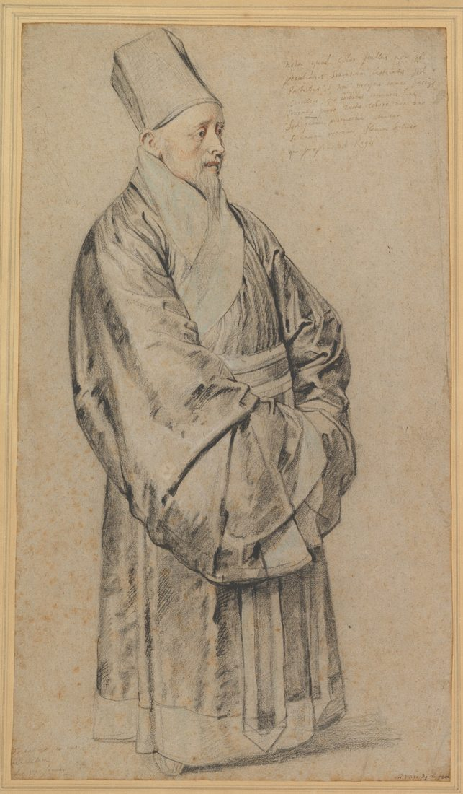
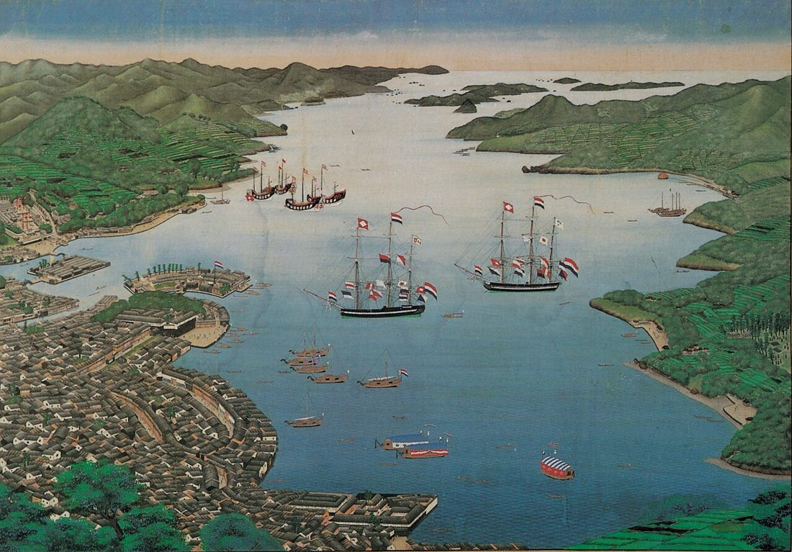
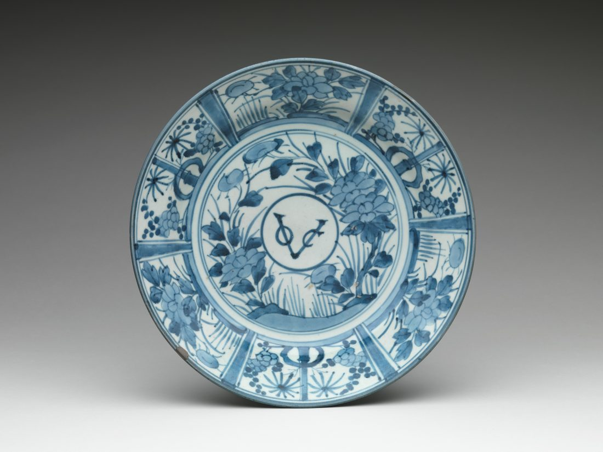
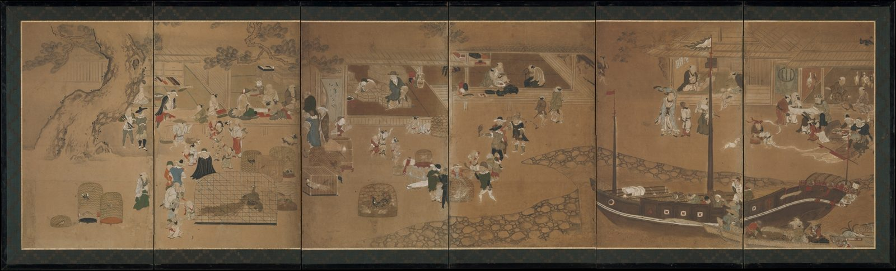
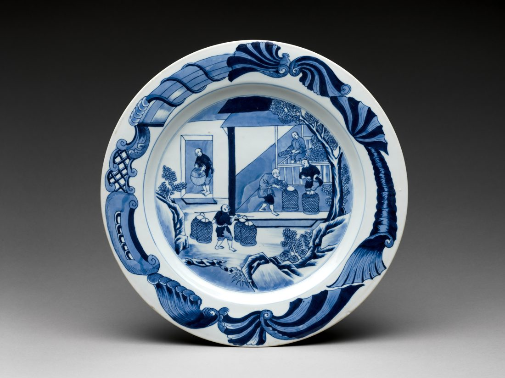
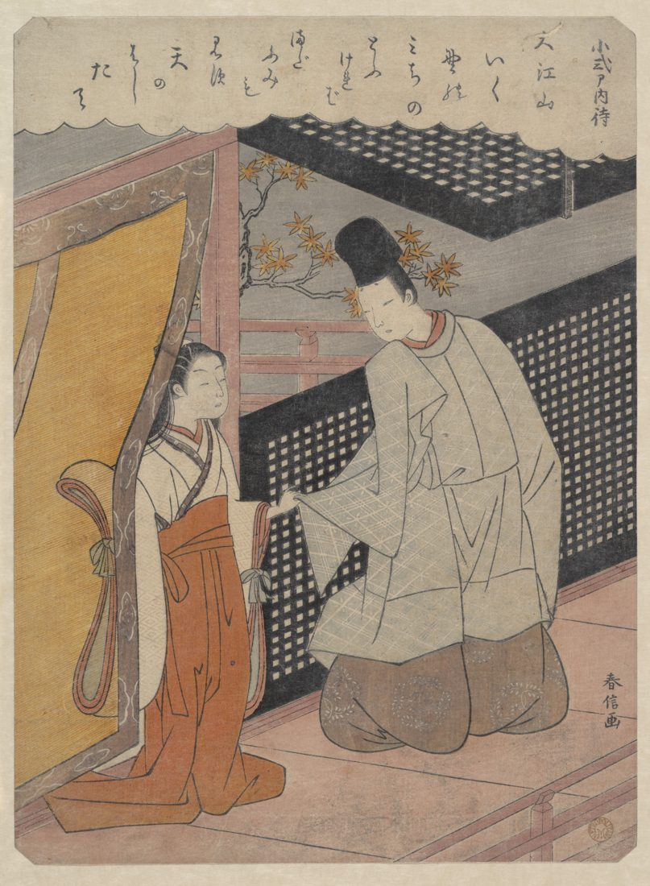

Unit 4 · Study guide · Synthesis
Europe Enters the Scene 南蛮
Seaborne empires, missionaries, and the three societies compared, c. 1500–1800
ContentsOverview
The unit in one paragraph
pp. 264–269, 304
Asian trade routes were flourishing long before Europeans arrived. Drawn by silk, porcelain, and spices, the Portuguese came first in the early 1500s, then the Spanish, Dutch, and British. Catholic missionaries followed the traders. Each East Asian state eventually shut missionaries out (Japan in the early 1600s, China in the early 1700s, Korea in the early 1800s), each for its own reasons, and confined European trade to chosen ports. Before 1800 the Europeans changed East Asia far less than they changed the Americas. The unit closes with two comparisons across China, Korea, and Japan: how women's situations differed, and how each society used Neo-Confucianism.
- Why did Europeans want to trade in East Asia, and what did they have to offer?
- Why did Japan, China, and Korea each turn against Christianity?
- How did each state control contact with the outside world?
- How alike were women's lives, and Confucian ideals, across the three countries?
Timeline at a glance
Key terms first
Terms are grouped by topic. Where a term depends on another, the entry says what it builds on, so read those first. Hover or tap any dotted term in the text for a quick definition, or open ✎ Key terms at the bottom right. † marks a term or fact from outside the textbook.
Trade and empire
- Indigenous trade routes
- Trade routes between Northeast and Southeast Asia, and Muslim and Indian routes across the Indian Ocean, that flourished long before Europeans came. Europeans mostly fit into these networks. pp. 265, 266
- Spice Islands
- The islands of Indonesia (the Moluccas) that produced spices. The Portuguese followed Muslim and Indian routes there from Goa. p. 265
- Malacca
- A Chinese trading center near the tip of the Malay Peninsula, controlling the strait into the South China Sea. Captured by the Portuguese in 1511 and used as their base for reaching China. p. 265
- Macao
- A Portuguese trading post on vacant land near the mouth of the Pearl River, allowed by local Chinese officials in 1557 without informing Beijing. The first stop for all Europeans going to China until the 1800s; Portuguese until 1999. p. 265
- New World crops
- Corn, sweet potatoes, chili peppers, and tobacco from the Americas: the only significant new products Portuguese traders added to East Asian networks. p. 265
- Silver trade
- China's monetary system depended on silver, and its own production had fallen after 1430. China bought Japanese silver carried by the Portuguese and half of all silver mined in Mexico and Bolivia, paying in silk, porcelain, and lacquer. pp. 265, 267
- Manila · the Pacific route
- Spain made the Philippines a colony and founded Manila in 1571. Once Andrés de Urdaneta found a sailing route back across the Pacific to Mexico, Spanish ships carried New World silver through Manila to China. p. 267Builds on: silver trade
- Royal monopoly · captain major
- In 1550 the Portuguese viceroy at Goa made the Japan trade a monopoly of the crown. Each year a crown-appointed captain major sent ships to Japan, where warlords competed to attract them to their ports. p. 267
- East India companies
- Trading companies set up by Britain and the Netherlands around 1600 that could raise far more capital than the merchants of Spain and Portugal. The Dutch and British who reached Japan came for these companies, not their governments. pp. 268–269
- Maritime ban
- Japan's 1635 order forbidding all Japanese to sail overseas and ordering those in Southeast Asia home or into permanent exile. Later the building of oceangoing ships was banned too. Contrast the Qing ban of 1655–1675, aimed at Ming loyalists on Taiwan. pp. 268–269
- Dejima
- An artificial island in Nagasaki bay, first built for the Portuguese. From 1641 the Dutch were confined there. Their yearly ships brought news, kept Japan linked to Southeast Asian trade, and opened the door to Western science and medicine. p. 269Builds on: maritime ban
- Canton (Guangzhou) system
- After 1759 all Qing maritime trade, with Southeast Asia or Europe, was confined to Canton. Licensed Chinese merchants formed a guild and guaranteed that Europeans obeyed Qing rules. pp. 268, 280
- Triangular trade
- The trade route between Korea and Japan that came to carry Japanese copper, Korean ginseng, and Chinese silver. British and Dutch traders tried and failed to break into it. p. 269
Missionaries and their reception
- Jesuits
- Members of the Society of Jesus, the Catholic order founded by Ignatius Loyola in 1534 to promote Catholic scholarship and combat the Protestant Reformation. The first missionaries to East Asia; they insisted conversion was not to be a step toward conquest. p. 267
- Mendicant orders
- Catholic monks who lived by begging, such as the Dominicans. Allowed into China after 1633, they criticized the Jesuits for aiming at the ruling class and fitting Christianity into Chinese ideas instead of appealing to the masses. pp. 267–268Builds on: Jesuits
- Papal bull
- A formal decree from the pope. The young Kyushu samurai who reached Rome helped the Jesuits obtain one closing Japan to other orders. It could not be enforced, and quarrels between orders hurt the missionaries' credibility. p. 267Builds on: Jesuits, mendicant orders
- Filial piety · ancestral rites
- Filial piety: reverence for parents, the key Confucian virtue. Ancestral rites, performed at a family altar holding ancestral tablets, honored the dead and trained this virtue. pp. 268, 304
- Accommodation
- Matteo Ricci's approach: dress and study like Chinese literati, and treat Confucianism as compatible with Christianity, since both stressed morality and ancestral rites were not worship. p. 268Builds on: Jesuits, filial piety
- Rites controversy
- The dispute over whether Chinese converts could keep their ancestral altars. In 1715 Ricci's accommodation was deemed heretical; the angry Kangxi emperor banned missionary work, and the Qing came to view all Europeans with suspicion. p. 268Builds on: accommodation, mendicant orders
- Western Learning
- The single term Koreans used for both Christian theology and Western science, which reached Korea in Jesuit books in Chinese brought back from Beijing. pp. 260, 269Builds on: Jesuits
- "Evil teaching"
- The Korean court's name for Christianity, which it saw as running counter to filial piety. It executed three French priests and their converts on this charge in 1839. p. 269Builds on: filial piety, rites controversy
- Kowtow
- Kneeling on both knees and bowing the head to the ground before the emperor. Lord Macartney objected to performing it in 1793. p. 280
Women's situations
- Patrilineal · patriarchal
- Patrilineal: kinship and descent traced through the male line. Patriarchal: authority in the family held by men. China's family was both from as far back as historians can trace. p. 264
- Bilateral kinship
- Tracing kinship through both men and women, as in Silla and Goryeo Korea and Nara and Heian Japan, where newlyweds more often lived with the wife's family. Both later grew more patrilineal. p. 264Builds on: patrilineal
- Concubine
- A woman in a recognized but secondary union with a man, ranked below his wife. Men in all three countries could take concubines. pp. 264, 304
- Vernacular vs. classical
- Vernacular writing follows everyday speech; classical writing uses the elegant literary language of the Chinese classics. In Qing China fiction and drama used the vernacular, but women poets chose the classical language. p. 264
- Kana
- A syllabary (signs for syllables) developed in the ninth century that made it much easier to write in Japanese. Heian women used it to write an astonishing number of books. p. 264Builds on: vernacular
- Hangul
- The Korean alphabet invented in the fifteenth century, making it possible to write in Korean. Women predominated among its early users, and far more writings by women survive after it. See Unit 1. p. 264Builds on: vernacular
- Footbinding
- Binding girls' feet to keep them small. Traced to the Song, it spread deeper into Chinese society later. Not copied by Korea, Japan, or most non-Han groups within China. p. 264
- Widow chastity
- The ideal that a widow should never remarry. It spread in China and became the ideal in Joseon Korea, where sons of remarried widows were barred from the civil service exams. pp. 264, 304
- Didactic texts
- Texts written to teach moral lessons, such as how women should behave. What they prescribe often differs from how women appear in fiction and their own writings. p. 264
Neo-Confucianism
- Li principle
- The invisible principle or pattern that informs everything and links all things; it differs in different objects. p. 304
- Qi matter · physical force
- What makes things physical and different from one another. For Zhu Xi neither li nor qi could exist without the other. p. 304Builds on: li
- Xin mind · heart
- What links li and qi in a person: pure in its underlying form, clouded by desires and feelings in its physical form, so these must be regulated. p. 304Builds on: li, qi
- Neo-Confucianism
- The philosophy systematized by Zhu Xi (1130–1200) explaining the universe and human nature through li and qi, and regulating behavior and family life with rites centered on filial piety. p. 304Builds on: li, qi, xin, filial piety
Why the Portuguese came first
p. 265
Hemmed in by Spain, Portugal relied on trade to fill the royal treasury. Its ships worked down the west coast of Africa for gold in the 1400s; African gold then paid for the voyage around the Cape of Good Hope in 1488. From there the Portuguese set up a colony at Goa in India and followed Muslim and Indian routes to the Spice Islands.
Spain went west instead: after taking Grenada in 1492, Isabella and Ferdinand paid for Columbus to seek another route to China. Two years later the pope divided the world beyond Europe between them. Spain got most of the Americas except Brazil; Portugal went east. p. 265; Britannica, "Treaty of Tordesillas" †
First contact with China p. 265
- 11511: Admiral Albuquerque captures Malacca, a base for reaching China.
- 21517: The first Portuguese embassy behaves badly, refusing Chinese customs; ship captains act more like pirates than traders.
- 31521–1523: The Ming try to ban the Portuguese; a treaty mission fires on Chinese warships near Guangzhou, wrecking its own purpose.
- 41557: Local officials, without telling Beijing, let the Portuguese build a post at Macao, so trade can be regulated.
Few Portuguese risked the long voyage in tiny ships. Most were not officials or glory-seekers but men trying to make a living against local traders, who themselves made little distinction between trade, smuggling, and piracy.
What did they bring? p. 265
New World crops
The only significant new products: corn, sweet potatoes, chili peppers, and tobacco (more).
Guns and syphilis?
Japanese historians long credited the Portuguese with both, after a typhoon blew a ship to Tanegashima in 1543. Now historians think both came earlier or at the same time along existing trade routes.

Silver, silk, and a global trade
pp. 265–268, 280
The trade that tied Europe, the Americas, and East Asia together ran on one need: China's money depended on silver, and its own mines had declined after 1430. Pick an empire below to follow its route.
Figure 4. The silver trade in four numbers.
Who profited, and how p. 267
- Portugal: the Ming banned Japanese ships for raiding the coast, so the Portuguese became the carriers between Japan and China. In 1550 the Japan trade became a royal monopoly; Japanese warlords competed to attract the annual ships.
- Spain: silver bought Chinese silk, porcelain, and lacquer, which dominated Europe's luxury trade and funded Spain's wars for generations. Traders found Manila too convenient to give up, despite Macao's ban on shipping via third countries.

Missionaries in Japan: welcome, then ban
p. 267
Catholic missionaries followed the traders, hoping to keep Europe's religious wars secret from Asia. The first were Jesuits. They showed a rare sensitivity to other cultures, but served a Church that would not compromise with local beliefs. It never won the influence in East Asia that Buddhism, the other foreign religion, had.
The welcome p. 267
- 1549: Francis Xavier lands in Satsuma; its lord hopes he will attract Portuguese ships. When they go to Hirado instead, Satsuma expels him. He preaches across western Japan wherever warlords allow.
- Asked why China knew nothing of Christianity, Xavier decided Japan would convert only if China led. He died off the China coast in 1552.
- 1565: Oda Nobunaga befriends the Jesuits to annoy his Buddhist enemies.
- 1580: The Jesuits acquire Nagasaki from a warlord eager for Portuguese trade.
- 1582: Four young Kyushu samurai sail for Lisbon and Rome and help win a papal bull keeping other orders out of Japan.

The turn against Christianity p. 267
Warlords uniting Japan under secular authority grew suspicious. If an absolute god demanded absolute loyalty, where did that leave the bond between lord and retainer?
- 11587: Suppression begins.
- 21596: It intensifies after the pilot of a wrecked ship allegedly says soldiers followed Spanish missionaries into the Philippines.
- 31614: Tokugawa Ieyasu decides missionaries undermine the social order and are not needed for trade; he expels them on pain of death and tortures and kills converts who refuse to renounce their faith, including Koreans brought to Japan as slaves in the 1590s invasions.
- 41624: The shogunate breaks off relations with Catholic countries.
- 5Hidden Christians carry on in secret, venerating the Virgin Mary disguised as the bodhisattva Kannon.
The papal bull for the Jesuits could not be enforced. Quarrels between the Catholic orders over how to present Christianity in East Asia damaged the missionaries in the eyes of Asian rulers. p. 267
Missionaries in China: Ricci and the rites controversy
p. 268; see also Unit 2

Christianity reached China later than Japan.
- 1583: the Jesuit Matteo Ricci is allowed beyond Macao. He educates himself in the style of Chinese literati and settles in Nanjing.
- 1601: tacit permission to live in Beijing. The Chinese learn Western geography, astronomy, and Euclidean mathematics from him.
- After his death in 1611, Jesuits regulate the Chinese lunar calendar, keeping their standing through the Ming collapse and the Qing founding (1644).
Two ways to convert China p. 268
- Aim at the ruling class and literati.
- Confucianism and Christianity share concern for morality and virtue.
- Ancestral rites are not worship, so converts can keep them (accommodation).
- Allowed into China after 1633; live on alms.
- Stay European in approach and appeal to the masses.
- Fitting Christianity into Chinese ideas is wrong (more).
Figure 8. The two sides of the dispute, from p. 268.
How the rites controversy ended
- 1Religious and political quarrels in Europe, worsened by hostility to the Jesuits, lead Rome in 1715 to rule Ricci's accommodation heretical.
- 2Insulted, the Kangxi emperor forbids all missionary work, though Jesuits may stay in Beijing for the calendar. (A Jesuit portrait painter later served his son and grandson.)
- 3Together with charges that missionaries meddled in the imperial succession, the outcome makes the Qing view all Europeans with suspicion.
Protestant traders and closing doors
pp. 268–269, 280
After Europe's religious wars, Protestant countries sent their own fleets east, determined not to let Catholic rivals dominate the world. Britain's defeat of the Spanish Armada in 1588 began Spain's long decline. The Dutch opened a faster route across the southern Indian Ocean to Java. Both Britain and the Netherlands set up East India companies around 1600 that could raise far more capital than Iberian merchants. p. 268
† The textbook dates both companies to 1600; the English company was chartered in 1600 and the Dutch (VOC) in 1602 (Britannica, "East India Company"; "Dutch East India Company").
Japan: the Dutch survive, the rest leave pp. 268–269
| Year | Step | Purpose |
|---|---|---|
| 1600 · 1613 | Dutch, then British arrive for their trading companies | Trade, not diplomacy |
| 1623 † | British close their quarters | Scant profits |
| 1635 | Maritime ban: no Japanese may sail overseas; the Japanese community at Hoi An, Vietnam, disappears | Stop what the shogunate deemed smuggling |
| later | Building oceangoing ships banned | Control unregulated trade and piracy |
| 1641 | Dutch moved to Dejima | Confine the one remaining Western trader |
| 1600s | Import substitution for silk and sugar (see Unit 3) | Keep scarce precious metals at home |
† The textbook says only that the British shut down their quarters; the 1623 date is from the University of Oxford's "The Bodleian Shuinjō: Early English Trade with Japan, 1613–1623."



China: trade by rule, at one port pp. 268, 280
The Qing limited trade for strategic reasons too. From 1655 to 1675 it banned maritime trade to isolate Ming loyalists on Taiwan. Merchants could trade with foreigners only under tight control, and after 1759 all maritime trade was confined to Canton. Europeans put up with this because China offered luxuries and tea for silver.
Rules for Europeans at Canton
- Pay cash for goods
- Stay outside the walled city
- No sedan chairs
- No women or weapons in their quarters
- No learning Chinese
p. 280
Guns off first
When European ships visited Chinese or Japanese ports, they were supposed to unload their guns before trade could begin. A painting in the textbook shows the guns under a roof beside the trading sheds. p. 268
By the late 1700s British merchants could find nothing the Chinese would buy, and the trade balance grew lopsided. Lord Macartney's embassy of 1793 asked for a post near the tea districts, a treaty, and an ambassador in Beijing. He objected to the kowtow, met the Qianlong emperor informally, and got nothing: the court wanted to keep regulated trade as much as Britain wanted to end it. More in Unit 2. p. 280


Korea: unfriendly to merchants and missionaries
pp. 260–261, 269; see also Unit 1
British and Dutch traders tried in the 1600s to insert their goods into the trade between Korea and Japan. The court refused them, out of memories of piracy, fear of unregulated trade that smacked of smuggling, and suspicion of European motives. No European missionary or merchant tried to visit Korea until 1836. p. 269
From books to persecution pp. 260–261, 269
Figure 16. Christianity in Korea, 1653–1839.
How much did Europe matter before 1800?
p. 269
Very little, the textbook argues. Except for a few outposts, Europeans seized no territory in East Asia, and what they tried to take they could not always hold.
Indian Ocean
Arabs expelled the Portuguese from the Red Sea, Aden, Muscat, and Mombasa over the 1500s–1600s.
South Asia
From the Mughal conquest (1520s) to Afghan attacks (1750s), the worst threats came from non-Europeans.
China's seas
In the 1600s the Chinese navy expelled the Dutch from the Pescadores and from outposts on Taiwan.
Trade grew from the 1500s to the 1700s, but outside the Philippines it did not yet lead to colonization, as it had in the Americas.
How three states controlled contact
pp. 265–269; see Unit 3 for Japan's four points of contact
Tap any dot to read the event. The three countries closed to missionaries roughly a century apart.
| Japan | China (Ming–Qing) | Korea | |
|---|---|---|---|
| Missionaries banned | Expelled 1614 | Missionary work forbidden after 1715; Jesuits kept for the calendar | Persecution from 1791; executions 1839 |
| Main reason | Christianity undermined lord–retainer loyalty and the social order; fear of conquest | Insult of the rites ruling; meddling in the succession | Christianity defied filial piety; tangled in factional politics |
| European trade | Dutch only, at Dejima (1641) | Macao; then Canton only (1759) | None |
| Own subjects abroad | Banned from sailing overseas (1635) | Maritime trade banned 1655–1675 | Envoys to Beijing bring back books |
| What got through | News, Western science and medicine via the Dutch | Astronomy, geography, mathematics via Jesuits | Western Learning in Chinese books; the calendar |
Women's situations
p. 264; see also Units 1, 2, 3
Compared with women in England or France around 1700–1800, women in China, Korea, and Japan were probably more like each other.
What the three shared
- Men could take concubines and divorce wives fairly easily; women could not divorce husbands.
- Wives were expected to defer to men.
- Girls did not go to school with boys; male literacy was much higher.
- Female entertainers mixed with high-ranking men but had low standing.
Historians also see women's situations as declining over time in all three, with a high point between about 650 and 1050.
Where they differed: kinship
Why Korea and Japan shifted
- Both used Chinese law codes as models.
- Japan: in samurai families, property went to a single heir, marriages became more durable, and wives moved in with husbands' families.
- Korea: yangban commitment to Confucianism and deliberate efforts to teach filial piety and wifely deference.
Not as far as China
In Korea maternal kinship still mattered: the son of a yangban father and a lowborn mother could not take the civil service exams.
Where they differed: writing
Women's literacy had less to do with Confucianism than with writing systems.
| Script | Women writers | |
|---|---|---|
| Japan | Kana, 9th c. | Heian women wrote an astonishing number of books; later women writers drew less attention, though kana remained. |
| Korea | Hangul, 15th c. | Women predominated among early users; far more women's writings survive after it. |
| China | Classical vs. vernacular | More women published poetry under the Qing than ever before, but in the classical language, rarely the vernacular. |

Where they differed: the body and remarriage
| China | Korea | Japan | |
|---|---|---|---|
| Footbinding | From the Song, spreading deeper into society | Not copied | Not copied |
| Widow chastity | Growing pressure not to remarry | The ideal under Joseon; sons of remarried widows barred from exams | Elite sisters and daughters remarried for political reasons |
In all three countries, didactic texts, fiction, and women's own writings tell different stories. Before calling women submissive, recall the resourceful servants, overbearing mothers-in-law, and schemers of literature, and the chances women seized to shape their own lives. p. 264
Neo-Confucianism in three countries
p. 304; fuller treatment in Unit 3, Part 12
principle: what makes all things one
matter: what makes things differ
mind-heart: links them; clouded by desire
Zhu Xi regulated family life with rites: men and women live separately, the wife ranks above concubines, and ancestor rites train filial piety. The wife, unlike concubines, would join the ancestors on the family altar. How far each country lived this out connects directly to Part 9:
| China | Korea (Joseon) | Japan (Tokugawa) | |
|---|---|---|---|
| Role | Zhu Xi required for the exams; some thinkers broke with him | Yangban weapon against Buddhism; li–qi debates later tied to factions and purges | Ideology of rule: hierarchy as natural order |
| Separate sexes | The ideal | Walled men's quarters in front, women's behind | Only rich warriors could afford it |
| Wife vs. concubine | Wife superior | Only primary wife's sons fully yangban; a king's concubine mother got only private rites | Distinguished for political as much as moral reasons; birth mothers more respected than in Korea |
| Mourning | Rites for ancestors | Eldest son lives in a hut by the tomb | Buddhist specialists still handled the dead |
Korea went furthest in putting Neo-Confucian family ideals into daily life; Japan used Neo-Confucianism above all as an ideology of rule, adapting it where politics or Buddhism got in the way. p. 304
Test yourself
Flashcards
Who's who
| Person | Why they matter |
|---|---|
| Alfonso de Albuquerque | Captured Malacca, 1511 |
| Andrés de Urdaneta | Found the sailing route back across the Pacific to Mexico |
| Ignatius Loyola | Founded the Jesuits, 1534 |
| Francis Xavier | First Jesuit in Japan, 1549; died off China, 1552 |
| Louis Frois | Jesuit who met Oda Nobunaga, 1565 |
| Oda Nobunaga | Befriended Jesuits to annoy Buddhist enemies |
| Tokugawa Ieyasu | Expelled missionaries, 1614 |
| Matteo Ricci | Jesuit in literati style; Beijing 1601; accommodation |
| Kangxi emperor | Banned missionary work after the 1715 ruling |
| Lord Macartney | 1793 British embassy to Qianlong; refused the kowtow |
| Yi Seunghun · Kim Beomu | Brought Christian texts to Korea (1784); first Korean martyr |
| King Jeongjo | Tried toleration, then executed Catholics (1791) and Zhou Wenmo (1794) |
| Zhu Xi | Systematized Neo-Confucianism (1130–1200) |
Key dates
| 1488 | Portuguese round the Cape of Good Hope |
| 1511 · 1517 | Malacca captured; first Portuguese embassy to China |
| 1543 | Ship blown to Tanegashima, Japan |
| 1549 | Xavier lands in Satsuma |
| 1550 | Japan trade made a Portuguese royal monopoly |
| 1557 | Macao |
| 1571 | Manila founded |
| 1580 · 1587 | Jesuits acquire Nagasaki; suppression begins |
| 1583 · 1601 | Ricci beyond Macao; in Beijing |
| 1588 | Spanish Armada defeated |
| 1600 · 1613 | Dutch, then British, reach Japan |
| 1614 · 1624 | Missionaries expelled; relations with Catholic countries cut |
| 1635 · 1641 | Maritime ban; Dutch to Dejima |
| 1653 | Korea adopts the Western calendar |
| 1655–75 | Qing maritime ban |
| 1715 | Rites ruling; Kangxi bans missionary work |
| 1759 | Canton only |
| 1784 · 1791 | First Korean congregation; persecution begins |
| 1793 | Macartney embassy |
| 1839 | French priests executed in Korea |
Discussion questions
Open each for points the reading gives you to work with.
Why did Europeans want to trade in East Asia, and what could they offer?
- Silks, porcelain, spices, and later tea.
- They had little China wanted except silver, from Japan and the Americas, and New World crops.
- They profited mostly as carriers, e.g. between Japan and China during the Ming ban on Japanese ships.
Why did Japan, China, and Korea each turn against Christianity?
- Japan: an absolute god threatened lord–retainer loyalty; fear of conquest after the Philippines; not needed for trade.
- China: the 1715 ruling insulted the Kangxi emperor; charges of meddling in the succession.
- Korea: rejecting ancestral rites defied filial piety; converts were caught up in factional struggles.
Was Ricci's accommodation a wise strategy?
- For: won literati standing, a place in Beijing, and influence through science and the calendar.
- Against: mendicants and Rome rejected it; once overturned, the whole mission was banned.
- Consider whether a Church that "refused to compromise" could ever have kept it.
Did restricting contact isolate East Asia?
- Trade continued, but through chosen ports: Dejima, Macao, Canton.
- Knowledge still flowed: Dutch science, Jesuit astronomy, Western Learning in Korea.
- Rulers aimed to control smuggling, piracy, and precious metals, not to shut out the world.
Were women's situations in the three countries more alike or more different?
- Alike: concubinage, one-sided divorce, lower literacy, decline after 650–1050.
- Different: kinship history, scripts and women's writing, footbinding, widow remarriage.
- Didactic texts are not the whole picture.
Which society was the "most Confucian," and what does that question miss?
- Korea applied family rites most strictly; China made Zhu Xi the exam orthodoxy; Japan used it to legitimate rule.
- In each case politics, older kinship systems, or Buddhism shaped how it was lived.
Sources and further reading
- Main text: Patricia Buckley Ebrey & Anne Walthall, Modern East Asia from 1600: A Cultural, Social, and Political History, 3rd ed. (Cengage, 2013): Connections: "Europe Enters the Scene," pp. 265–269; Making Comparisons: Women's Situations, p. 264; Making Comparisons: Neo-Confucianism, p. 304. Supporting passages: Ch. 15, pp. 260–261 (Western Learning in Korea); Ch. 16, p. 280 (Contacts with Europe, Macartney).
- Outside facts (marked †): Encyclopaedia Britannica, "Treaty of Tordesillas" (1494 division); "East India Company" and "Dutch East India Company" (charter dates); University of Oxford, "The Bodleian Shuinjō: Early English Trade with Japan, 1613–1623" (British closure, 1623). The meaning of nanban follows the Met's catalog title "Nanban (Southern Barbarian) Style." The Trigault caption follows the Met's catalog record.
- Explore further: MIT Visualizing Cultures, especially "The Rise & Fall of the Canton Trade System"; the University of Pittsburgh's Japan: Places, Images, Times & Transformations.
Image credits
- Attributed to Kanō Naizen, Arrival of the Southern Barbarians (detail), late 16th–early 17th c., National Museum of Ancient Art, Lisbon: public domain, Wikimedia Commons.
- Arrival of the Europeans, pair of six-panel screens, first quarter 17th c.: CC0, Metropolitan Museum of Art.
- Coffer in Nanban (Southern Barbarian) Style, c. 1600–30: CC0, Met.
- Peter Paul Rubens, Portrait of Nicolas Trigault in Chinese Costume, 1617: CC0, Met.
- Kawahara Keiga, Nagasaki port map, c. 1820: public domain, Wikimedia Commons.
- Plate with Monogram of the Dutch East India Company, c. 1660: CC0, Met.
- Foreign Merchants in Japanese Trade Port, early 19th c.: CC0, Met.
- Dish with a scene of tea cultivation, c. 1740–45: CC0, Met.
- Suzuki Harunobu, Koshikibu no Naishi, c. 1768: CC0, Met.
- Canton factories, c. 1805: see Unit 2 credits.
- Trade-route map: drawn for this course on Natural Earth 1:110m land data (public domain).


Image titles and dates come from each image's catalog record, not from the textbook.